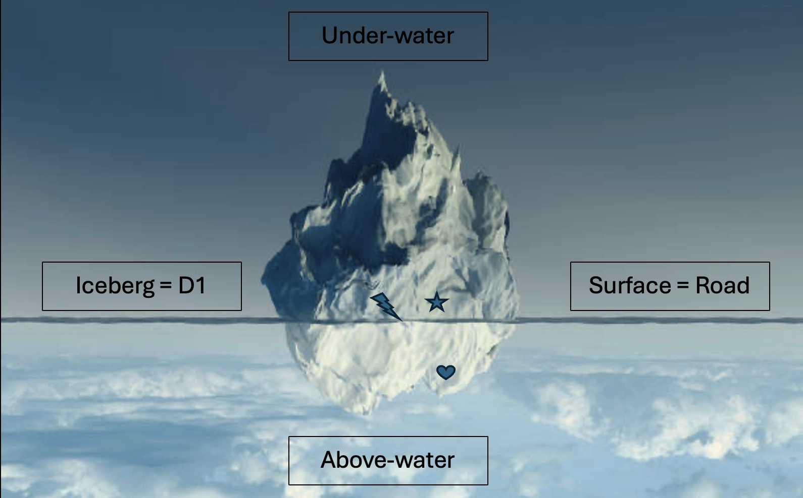

I love living in district one. I was warned against choosing an apartment in the bustling heart of the city due its chaos and loud nightlife. Both are valid deterrents from choosing D1 as your home district, but they are simply consequences of the countless advantages livning in this district comes with! This district is easily walkable, in comparison to its neighbouring districts, and everything you could possibly need is always within 500 meters of your home. That being said, there are definitely some areas that are more liveable than others. I have come up with a wonky and highly ironic visuable representation of this boiling hot district. This is district one as an upside down iceberg.
The part of the iceberg which is under water represents the area of district one which is swallowed by chaos in the form of tourists, markets and motorbikes. However, the part of the iceberg above water is the area of district one in which I currently live. It is not engulfed by the same chaos, on the contrary, I find this area to be full of smiling locals and small street food stalls. Every cafe (and there are many!) is intended for studying and quiet chit-chat, and traffic lights are obeyed! (for the most part) The surface of the water represents the enormous "" road which must be crossed to reach sights such as the Ben Thanh Market, the Bui Vien Walking Street and the Postal Office. Contrary to what I had been told, this road is quite easy to cross, although the crossing directly opposite the Ben Thanh Market is not for the faint hearted. I feel entirely safe visiting each place on my own, even at night, though the rats and cockroaches make me squeamish.
Life here is easy. I truly cannot believe how lucky I am to have found this appartment. After living here for a month I have not yet had any real issues with the place, and I feel right at home. It has everything I need, is located perfectly in a quiet niche of district one, and the apartment building is full of life and history. My neighbours are all incredibly helpful, and some of the floors are converted into restaurats. I even have a nail lady on my floor!